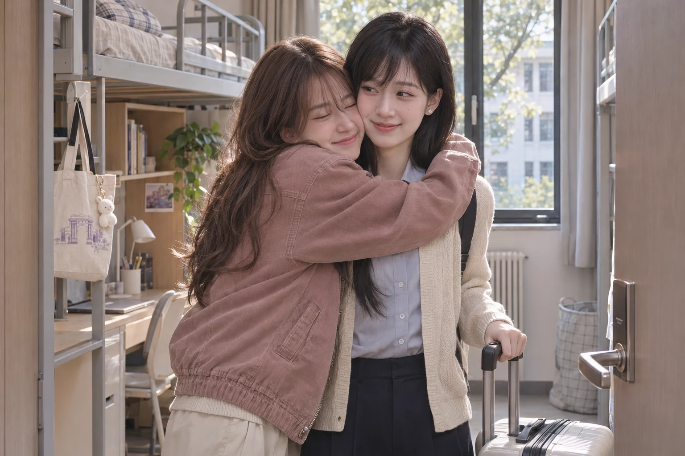
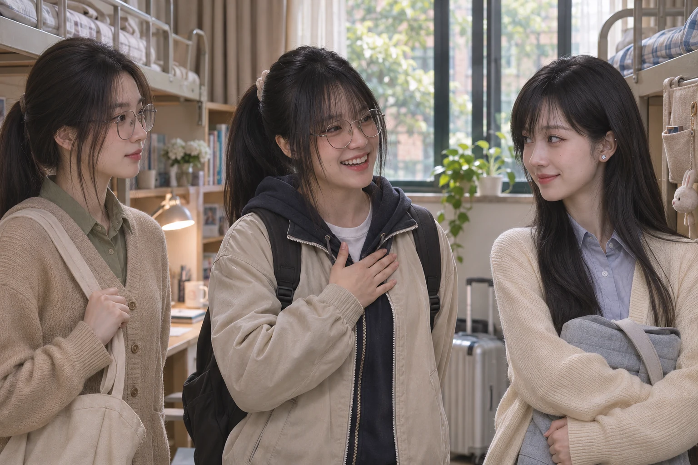
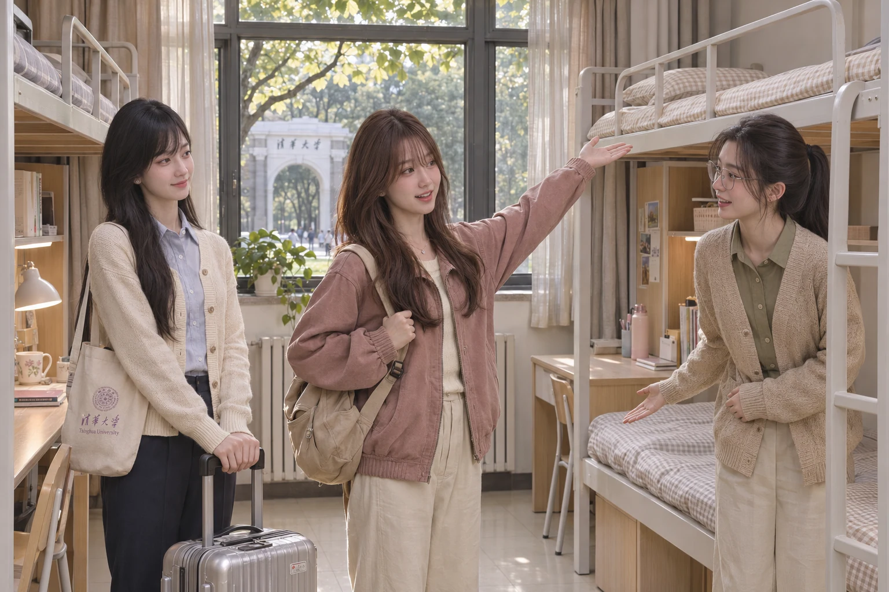
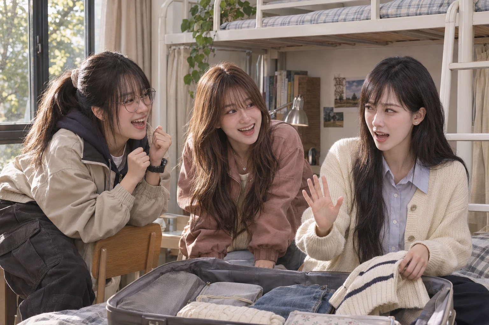
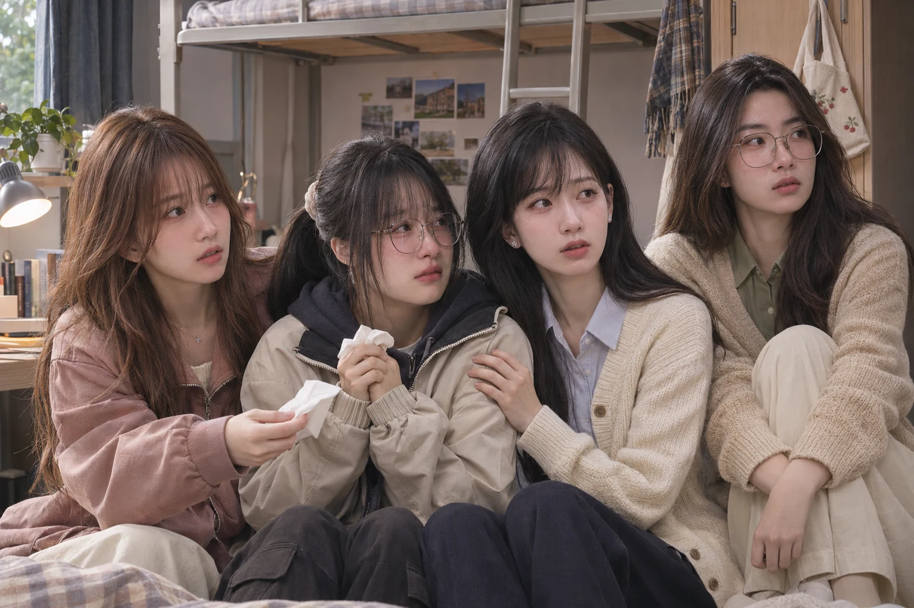

ตอนที่ 27
เพื่อนใหม่ที่คล้ายกัน
เรือนร่างอ้อนแอ้นลากกระเป๋าสัมภาระขึ้นสู่ชั้นสามของหอพักนักศึกษา เธอได้อยู่ตึก 9 ชั้น 3 ห้อง 372 ซึ่งทางมหาวิทยาลัยไม่ได้แบ่งแยกหอพักตามคณะที่เรียน ดังนั้นนักศึกษาต่างคณะมักได้เป็นเพื่อนร่วมห้องกัน หญิงสาวจึงคิดว่าการโชคร้ายอยู่ห้องเดียวกับนางเอกแทบไม่มีโอกาสเกิดขึ้นเลย
มือเรียวคว้ากุญแจไขห้อง ปรากฏว่าห้องไม่ได้ล็อก และเธอมาถึงห้องเป็นคนสุดท้าย ทันทีที่ประตูเปิด สายตาสามคู่ก็พุ่งมาที่เธอเป็นจุดเดียว
“สวัสดี” ซ่งอวิ๋นยิ้มแย้มอย่างเป็นมิตร ปกปิดความรู้สึกแท้จริงในใจ
“เสี่ยวอวิ๋น!! ได้อยู่ห้องเดียวกัน พระเจ้าเข้าข้างชัด ๆ เลย” เฉียวอันฉีปรี่เข้ามากอดซ่งอวิ๋นพลางหวีดร้องราวกับถูกล็อตเตอรีรางวัลที่หนึ่ง

“บังเอิญมากจริง ๆ” เธอตบแผ่นหลังอดีตเพื่อนสนิท สายตาสำรวจเพื่อนร่วมหอพักอีกสองคน
ไม่รู้ว่าโชคชะตาเล่นตลกอะไรกับเธอ เพราะเพิ่งมีปากเสียงกับหนานชิว คุณหนูรองตระกูลหนานไปเมื่อตอนสอบเกาเข่า คราวนี้เธอได้อยู่ร่วมห้องกับ ‘หนานหรง’ คุณหนูใหญ่ตระกูลหนาน
หากให้กล่าวถึงคุณหนูใหญ่หนาน ดูเหมือนไม่ค่อยมีข่าวอะไรออกมามากนัก เพราะเธอไม่ค่อยเข้างานสังคม และไม่ออกงานเลี้ยงกับครอบครัวเท่าไหร่ ดูชอบเก็บตัว ชอบอยู่สงบ ๆ มากกว่า
“สวัสดี ฉันชื่อหนานหรง เรียนคณะบริหาร” หนานหรงครอบครองใบหน้าหวาน ดูน่ารักราวกับตุ๊กตากระเบื้อง ดวงตากลมโตซ่อนอยู่หลังกรอบแว่นบางสีเงินที่ช่วยขับให้ใบหน้าดูอ่อนโยนยิ่งขึ้น ผิวขาวเนียนและริมฝีปากสีชมพูจาง ๆ ทำให้เธอดูละมุนละไม เส้นผมยาวสลวยถูกรวบเป็นทรงหางม้าอย่างเรียบง่าย
แม้หน้าตาจะน่ารัก ทว่าเธอกลับมีบุคลิกนิ่งสงบ ไม่ค่อยแสดงอารมณ์มากนัก และมองผู้คนด้วยสายตาเงียบขรึม รอยยิ้มของเธอเกิดขึ้นไม่บ่อย แต่ทุกครั้งที่มุมปากยกขึ้นเพียงเล็กน้อย บรรยากาศรอบตัวก็พลันอ่อนลงอย่างไม่น่าเชื่อ ความเงียบของเธอไม่ได้ชวนอึดอัด กลับให้ความรู้สึกสุขุม เย็นสบาย
ทว่าตอนนี้ซ่งอวิ๋นสัมผัสได้ว่าภายใต้ท่าทางสงบสุขุม แฝงความทุกข์ตรมบางประการ
“ฉันซ่งอวิ๋น”
“ฉันรู้จักเธอ เราเคยเจอกัน 2-3 ครั้ง หลังจากนี้ถ้ามีอะไรให้ช่วยก็บอกได้เลยนะ” หนานหรงซ่อนความประหม่าไว้ภายใต้ท่าทางสงบนิ่ง เธอพยายามอย่างยิ่งที่จะผูกมิตรกับอีกเพื่อนใหม่ แต่เพราะเป็นคนเข้าสังคมไม่เก่ง เธอจึงถูกเข้าใจผิดอยู่บ่อย ๆ
“อื้ม ขอบใจ เธอก็เหมือนกันนะ” ซ่งอวิ๋นช่างสังเกต จึงมองออกว่าแท้จริงแล้วอีกฝ่ายประหม่า แม้จะดูพูดจาห้วน ๆ และนิ่งเฉยจนชวนให้เข้าใจผิดก็เถอะ
“ส่วนฉันชื่อฟ่านเยว่ เรียกอาเยว่เฉย ๆ ก็ได้ อ้อ เรียนคณะวิศวะ ฝากตัวด้วยนะเพื่อน ๆ” ฟ่านเยว่ตบหน้าอกตัวเอง เธอเป็นหญิงสาวร่างกายบึกบึน ใบหน้ากลมนิด ๆ ท่าทางกระฉับกระเฉงและมีรอยยิ้มที่ดูจริงใจที่สุด

“ว้าว ห้องเราเรียนบริหารสามคนเลยเหรอเนี่ย มีอาเยว่คนเดียวที่มาจากคณะอื่น” เฉียวอันฉีร่วมวงสนทนาอย่างเป็นธรรมชาติ ก่อนซ่งอวิ๋นจะมาถึง เธอได้แนะนำตัวกับเพื่อนร่วมห้องทั้งสองเรียบร้อยแล้ว
“ก็นะ ฉันได้ยินว่าปีนี้คณะบริหารรับนักศึกษาเพิ่มขึ้นด้วย เท่าที่ฉันใช้ความสามารถพิเศษสอดส่อง ตึก 8-9 ส่วนมากเป็นเด็กบริหาร วิศวะ แล้วก็มีนักเรียนแพทย์ปนมานิดหน่อย”
“ความสามารถพิเศษในการสอดส่อง?” ซ่งอวิ๋นเอียงคอ
“พูดง่าย ๆ ก็สอดรู้สอดเห็นนั่นแหละ ก่อนพวกเธอจะมาถึง ฉันเดินทัวร์แทบทุกหอแล้ว”
“ฮ่า ๆ” ซ่งอวิ๋นกลั้นขำไม่อยู่ ขณะที่หนานหรงกะพริบตาปริบ ๆ รู้สึกอิจฉาที่อาเยว่พูดเก่ง ดูสดใสและเข้ากับคนง่าย เธอเองก็อยากเป็นเช่นนั้นบ้าง พ่อจะได้ไม่มองข้ามเธอไปหาลูกนอกสมรสคนนั้น
“อาอวิ๋น ตอนนี้ทุกคนเลือกเตียงกันแล้ว เหลือแค่เตียงฝั่งขวาด้านบน เธอนอนได้หรือเปล่า ถ้าอึดอัดเธอเปลี่ยนกับฉันได้นะ” เฉียวอันฉีชี้เตียงด้านขวา
“ไม่เป็นไร ฉันนอนตรงไหนก็ได้ ไม่มีปัญหาหรอก” ซ่งอวิ๋นไม่เรื่องมาก เธอได้นอนเตียงเดียวกับหนานหรง
“หรือเธออยากนอนตรงนี้ ฉันจะขึ้นไปนอนข้างบนเอง” หนานหรงเอ่ยอย่างใจกว้าง

“ไม่เป็นไรจริง ๆ ขอบใจนะคุณหนาน” ซ่งอวิ๋นโล่งใจไปเปลาะหนึ่ง อย่างน้อยคุณหนูใหญ่หนานก็ไม่ใช่คนเลวร้ายอะไร ดูจากความพยายามจะผูกมิตรนั่นแล้วก็น่ารักดี
“เรียกแค่ชื่อก็พอ” หนานหรงพูดเสียงเบาลง ก่อนแม่จะล้มป่วย เธอเคยได้ยินแม่เล่าเรื่องตระกูลซ่ง ท่านว่าไม่ให้สร้างศัตรูกับซ่งอวิ๋น เพราะท่านเคยได้รับความช่วยเหลือแม่หญิงซ่ง แม้สถานะทางสังคมในตอนนี้ทัดเทียมกัน แต่ไม่ควรกระทบกระทั่งไม่ว่าเรื่องใด ๆ ก็ตาม
ซึ่งการที่เธอได้เจอซ่งอวิ๋นในวันนี้ เธอรู้สึกว่าอีกฝ่ายดูเป็นมิตรและน่าเข้าหา ไม่มีความเย่อหยิ่ง และไม่ทิ้งความสดใส ทั้งที่พวกเรากำลังเผชิญปัญหาแบบเดียวกัน
“อาหรงก็เรียกฉันว่าอาอวิ๋นได้เลยนะ” ซ่งอวิ๋นไม่รู้ว่าอีกฝ่ายคิดสิ่งใดอยู่ในใจ เมื่อยื่นมิตรไมตรีให้ เธอก็ตอบแทนด้วยไมตรีในแบบเดียวกัน
บางทีพวกเราอาจเป็นเพื่อนกันได้ เพราะเจอเรื่องราวคล้ายกัน คิดแล้วหญิงสาวก็นำกระเป๋าสัมภาระเข้าไปที่ตู้เก็บของใช้ส่วนตัว พลางพิจารณาห้องพักนักศึกษาโดยละเอียด
ห้องพักนักศึกษาของมหาวิทยาลัยชิงหวาเงียบสงบและเป็นระเบียบตามแบบฉบับหอพักมหาวิทยาลัยที่ได้มาตรฐาน เมื่อเปิดประตูเข้ามาจะเห็นเตียงสองชั้นสองเตียงตั้งขนานกัน ชิดผนังทั้งสองด้าน ทำให้ห้องรองรับนักศึกษาได้สี่คน เตียงทำจากไม้สีอ่อนตัดกับโครงเหล็กสีขาว ดูเรียบง่ายแต่แข็งแรง
ข้างเตียงเป็นโต๊ะอ่านหนังสือและตู้เก็บของส่วนตัว มีโคมไฟเล็กติดอยู่เหนือโต๊ะสำหรับอ่านหนังสือยามค่ำคืน กลางห้องเหลือพื้นที่พอให้เดินผ่านได้สะดวก พื้นกระเบื้องสีครีมสะอาดสะอ้านสะท้อนแสงแดดอ่อน ๆ จากหน้าต่างบานใหญ่
แม้ขนาดห้องจะเล็กสักหน่อย แต่เธอคิดว่าใช้ชีวิตแบบนี้ก็น่าสนุกดี
“อาอวิ๋น ตอนนี้ในเน็ตยังพูดถึงเธอไม่หยุดเลยนะ พวกเขาหวังว่าเธอจะมาร้องเพลงบนเวทีอีกรอบ เธอได้อ่านบ้างไหม” เฉียวอันฉีก้มหน้าอ่านฟีดแบครายการแข่งขันร้องเพลงบนหน้าจอสมาร์ทโฟน ส่วนลึกในใจคิดอย่างไรมีแต่เธอที่รู้
“จริงด้วย!! ซ่งอวิ๋นคนดัง ห้องเรามีคนดังอยู่ด้วย” ฟ่านเยว่ตื่นเต้น
“ไม่ได้ดังขนาดนั้นสักหน่อยอาเยว่”
“ขนาดนั้นเลยแหละ นี่ถ้าเพื่อนฉันรู้ว่าฉันได้อยู่ห้องเดียวกับเธอ ต้องอิจฉาตาร้อนแน่ ๆ” ฟ่านเยว่ยิ้มตาหยี เวลาเบื่อ ๆ เธอจะขอให้อาอวิ๋นร้องเพลงให้ฟัง เอาให้แก้วหูเต้นระบำไปเลย

“ว่าไปแล้วฉันไม่ค่อยได้อ่านคอมเมนต์เลย ช่วงนี้มัวแต่ยุ่ง ๆ โดนด่าบ้างหรือเปล่า” ซ่งอวิ๋นพูดทีเล่นทีจริง เธอยังพูดคุยกับอันฉีตามปกติ แม้จับได้แล้วว่าอีกฝ่ายไม่จริงใจ
“ก็มีบ้างนิดหน่อย พวกแอนตี้ขาดความอบอุ่น ชอบยุ่งวุ่นวายกับเรื่องในครอบครัวคนอื่น บางคนแรงถึงขนาดบอกว่าเธอกับป้าโจวน่าสมเพช รั้งลุงซ่งไว้ไม่ได้ สุดท้ายก็ปล่อยให้ไปอยู่กับลูกเมียน้อย แต่เธออย่าถือสาเลยนะ” เฉียวอันฉีคาดหวังจะเห็นสีหน้าย่ำแย่ของซ่งอวิ๋น หากพบเพียงดวงหน้าเฉยเมยไม่ทุกข์ร้อน
“ไม่ถือหรอกน่า เดี๋ยวนี้อินเทอร์เน็ตเข้าถึงทุกคน คิดอะไรก็ง่ายแค่ใช้นิ้วจิ้ม ถ้าฉันต้องเดือดร้อนกับคอมเมนต์ด้านลบ คงทุกข์ใจมาก” ซ่งอวิ๋นไหวไหล่ ไม่ได้ไหลตามการชักจูงของเฉียวอันฉี ด้วยเห็นว่าอีกฝ่ายมีเจตนายั่วยุ
“มันทำใจมองข้ามได้ง่ายขนาดนั้นเลยเหรออาอวิ๋น” หนานหรงฟังเงียบ ๆ มาสักพัก แทรกบทสนทนา แม้รู้ว่ามันไร้มารยาท แต่เธออดไม่ได้จริง ๆ ทำไมซ่งอวิ๋นถึงปล่อยวางได้เร็วนัก ทั้งที่เพิ่งเจอเรื่องนี้ไม่กี่เดือน มีเคล็ดลับอะไรดี ๆ หรือเปล่า
“ไม่ง่ายหรอกอาหรง แต่ถ้ามันทุกข์มาก เราก็ต้องเอาใจออกห่างจากสิ่งที่ทำให้เราเป็นทุกข์” ซ่งอวิ๋นถอนหายใจอยู่ในอก เข้าใจดีว่าหนานหรงกำลังเปรียบเทียบตนเองกับเธอ
หากเธอไม่ได้เห็นเรื่องราวในความฝัน เธอคงไม่มีสติและอดทนอดกลั้นเช่นนี้
“ให้ตายเถอะ เพื่อนฉันเหมือนแม่ชีขึ้นทุกวัน” เฉียวอันฉีว่าเชิงขบขัน แต่ความจริงเธอไม่ขำด้วยเลยสักนิด
“ก็ดีกว่ามีเพื่อนเป็นคุณหนูเอาแต่ใจไม่ใช่เหรอ” ซ่งอวิ๋นกลัวหัวเราะ พลางจัดของในตู้ให้เป็นระเบียบ
“จริง ฉันก็ไม่ชอบพาตัวเองไปอยู่ในทีที่ทำให้เป็นทุกข์ จัดการคนอื่นไม่ได้ งั้นจัดการที่ตัวเองดีกว่า”
“พวกเธอ..เข้มแข็งจังเลย ฉันก็อยากเข้มแข็งมาก ๆ เหมือนกับเธอ” หนานหรงพึมพำเสียงแผ่วหวิวในลำคอ ทำซ่งอวิ๋นชะงัก
เธอนั่งลงข้างหนานหรง หัวไหล่นวลเนียนกระแซะไหล่อีกฝ่ายเบา ๆ “อาหรง คุณย่าของฉันสอนไว้ บางทีไม่จำเป็นต้องเข้มแข็งขนาดนั้นหรอกนะ เราเป็นมนุษย์นี่นา มีวันที่อ่อนแอบ้าง ทุกข์บ้าง มีความสุขบ้าง ทุกอย่างไม่จีรังยั่งยืน ฉันไม่รู้ว่าทำไมเธอถึงดูเศร้ามาก แต่ถ้าวันนี้เธอยังเข้มแข็งไม่ไหวก็ไม่เป็นไรเลย”
หนานหรงกรอบตาร้อนผ่าว ไม่มีใครบอกเธอแบบนี้ เพราะพ่อของเธอเป็นใหญ่ในบ้าน ปู่กับย่าเสียไปนานแล้ว ท่านจึงมีสิทธิ์ขาดในการตัดสินใจทุกอย่าง
ตอนเขาพาเมียน้อยและลูกนอกสมรสเข้าบ้าน ท่านบอกว่าเธอควรใจกว้าง ในฐานะพี่สาวก็ต้องตามใจน้อง ไม่ว่าน้องอยากได้อะไรก็ต้องให้ ในขณะที่แม่ของเธอล้มป่วยเพราะตรอมใจ
เวลานี้เธอจึงทุกข์อยู่ข้างใน ระบายกับใครไม่ได้ เพราะคิดว่าคงไม่มีใครเข้าใจเธอเลยสักคน ตอนนี้เห็นซ่งอวิ๋นที่เผชิญสถานการณ์เดียวกัน แต่เข้มแข็งและยังมีความสุข เธอทั้งอิจฉาและนับถือ
“คุณย่าของเธอสุดยอดมาก ๆ ถ้าย่ากับปู่ของฉันยังอยู่ บางทีอาจดีกว่านี้”
“อะไรกัน ตาแดงหมดแล้ว อย่าร้องไห้สิ” เฉียวอันฉีหยิบทิชชูมายื่นให้ เตรียมจะเปิดประเด็นเรื่องตระกูลหนานแบบไม่สนใจมารยาท ทว่าประตูห้องถูกเคาะและเปิดเข้ามาอย่างถือวิสาสะ สายตาสี่คู่จึงมองออกไปพร้อมกัน

“หนานชิว”
“ซ่งหวาน?”
มาอีกน้าาา